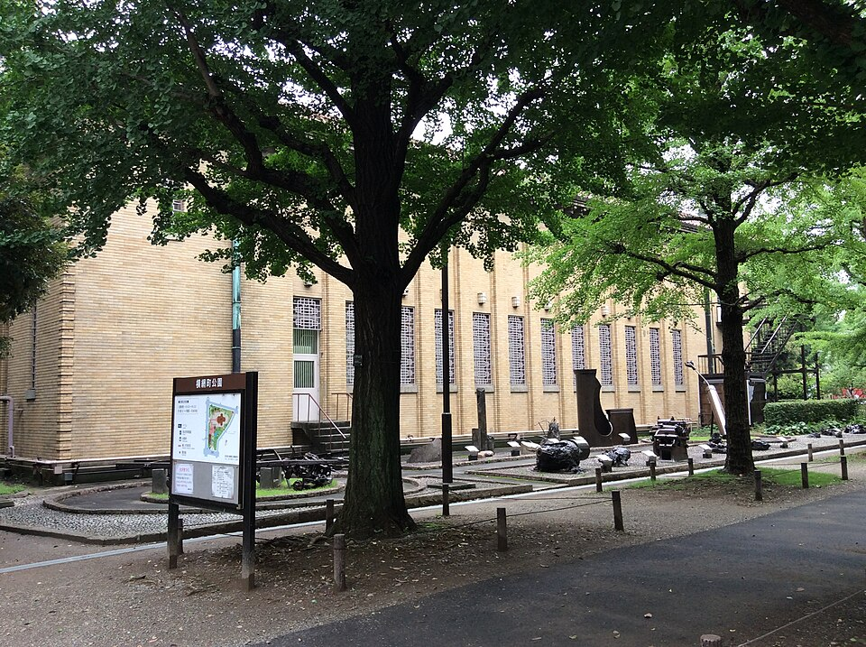
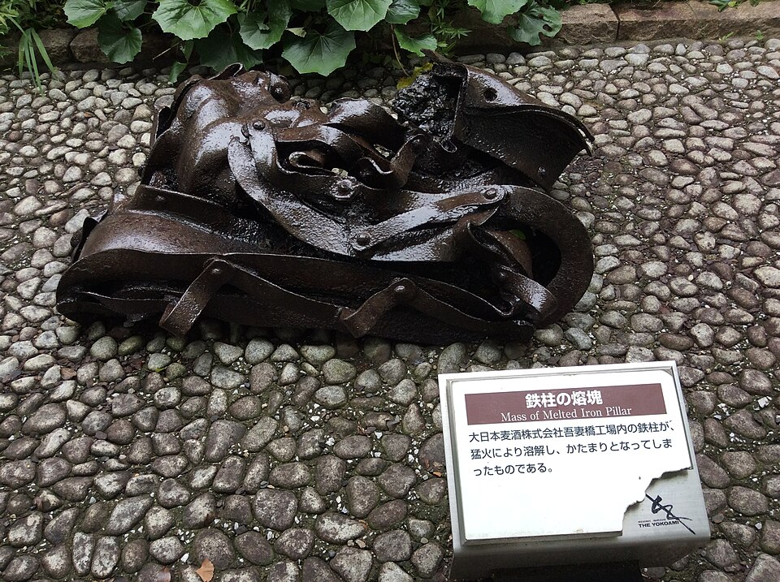
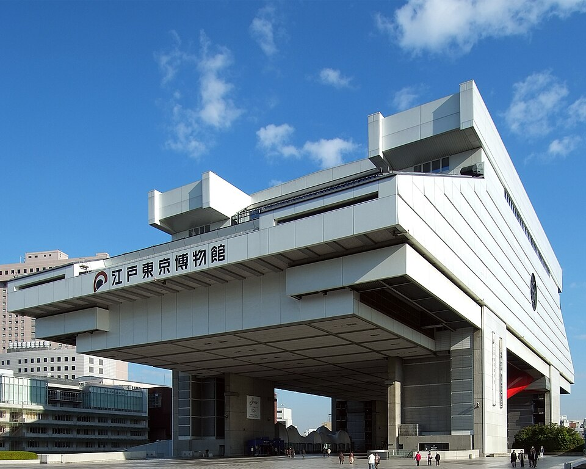
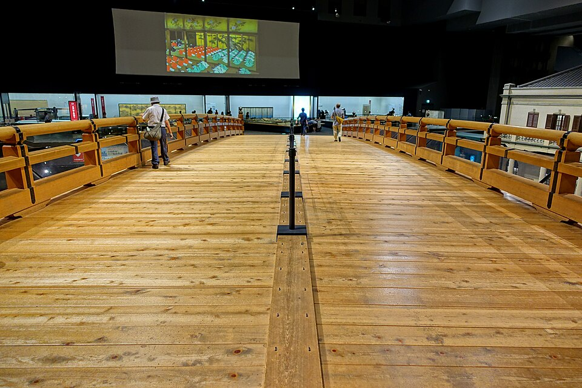
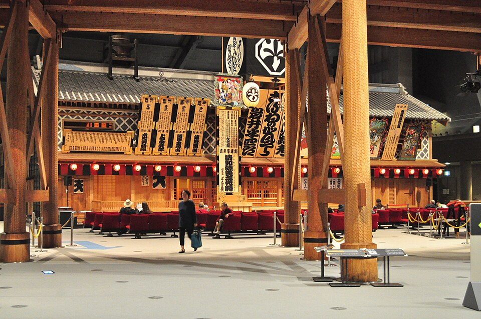
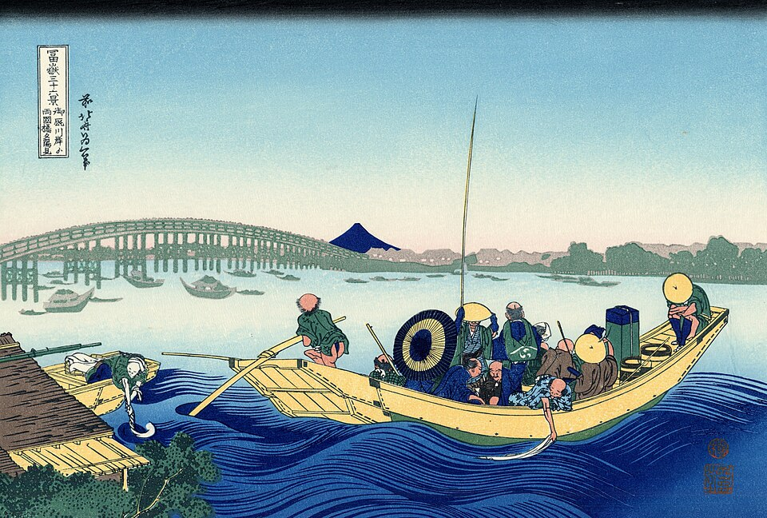

Среда после дождя: землетрясение 1923, история Tokyo, закат на Sumida
Вариант 1 (советую): Ryogoku
Ближе всего к отелю, первая половина под крышей, закат у воды. Подходит и под землетрясения, и под «живой город».
Вариант 2: Ueno
Национальный музей (до 17:00), рынок Ameyoko, закат на лестнице Yuyake Dandan в Yanaka. План · Ueno · Yanaka
Вариант 3: замок Edo и дворец
Вход в Восточный сад до 16:00. Лучше завтра, в четверг: весь день солнце, без спешки. Сад
Отель → Ryogoku
JR Akihabara: жёлтая Sobu (総武線), платформа 6, на Tsudanuma / Chiba (津田沼 / 千葉), 2 остановки: Asakusabashi, Ryogoku. Поезда каждые несколько минут. Выход West (西口): прямо перед тобой зал сумо Kokugikan, за ним музей и парк.
Музей землетрясения 1923 года (Fukko Kinenkan) и парк Yokoamicho
Здесь был армейский склад. 1 сентября 1923 года, во время Великого землетрясения Канто, сюда сбежались люди из окрестных кварталов с вещами; по вещам огонь перекинулся на площадь, и огненный вихрь убил здесь, по разным данным, до 44 000 человек (Wikipedia). Всего в Tokyo тогда погибло 58 000. В 1930 году на месте трагедии открыли мемориальный парк, в 1931 - этот музей: вещи, фото, картины пожара, во дворе - искорёженный огнём металл. Есть зал о бомбардировках Tokyo 1944-1945. Рядом Мемориальный зал (Ireido), где хранится прах погибших.
Часы по справочным сайтам, официальный сайт не открылся. Выходной - понедельник.







Edo-Tokyo Museum: история Tokyo
Город от 1590 до 1964 года в макетах кварталов: Edo самураев, Meiji, Showa. Внутри мост Nihonbashi в натуральную величину - по нему входили в Edo - и театр кабуки Nakamura-za. Само здание - архитектура: Kiyonori Kikutake, 62 м, поднято на четырёх опорах, как старый амбар для риса, высотой с бывший замок Edo (Wikipedia). Музей открылся после 4 лет ремонта 31.03.2026 (nippon.com). Сайт музея на сегодня: «открыто 9:30-17:30». Цена у источников разная (800 или 1 300 ¥), точную не проверил.



_-_Edo-Tokyo_Museum_-_Sumida,_Tokyo,_Japan_-_DSC06578.jpg){kind=link}


Закат у моста Ryogoku на Sumida
5-7 мин пешком от музея к реке. Набережная Sumida и мост Ryogoku - тот самый вид, который Hokusai нарисовал в серии «36 видов Фудзи»: «Закат над мостом Ryogoku». Ужин в Ryogoku: район борцов сумо, здесь едят chanko-nabe - их густое рагу.


Домой
JR Ryogoku: жёлтая Sobu, платформа 1, на Mitaka (三鷹), 2 остановки: Asakusabashi, Akihabara.
Все «музеи землетрясений» в Tokyo
| Где | Что | Сегодня, ср 14.10 |
|---|---|---|
| Fukko Kinenkan, Ryogoku | история землетрясения 1923: вещи, фото, металл; бесплатно | открыт 9:00-17:00 (справочные сайты) |
| Ikebukuro Bosaikan (пожарная служба) | настоящий стенд-тряска: 5 видов толчков, в том числе 2011 года; дым, тушение; бесплатно | открыт 9:00-17:00, но только тур с инструктором на японском, запись: на сайте за 5+ дней, позже - по телефону 03-3590-6565. Туры 13:00 и 15:00 |
| Honjo Bosaikan (пожарная служба), Sumida | то же: тряска, дым, ливень; бесплатно, по записи | закрыт: выходные - среда и 3-й четверг, то есть и завтра. Пт 16.10 открыт |
| Sona Area Tokyo, Ariake | «72 часа после землетрясения»: город после толчков в натуральную величину; бесплатно | открыт 9:30-17:00, вход до 16:30; 38 мин с пересадкой |
Источники: официальные сайты Tokyo Fire Department (Ikebukuro, Honjo) и парка Tokyo Rinkai (Sona Area) на 14.10; Fukko Kinenkan - справочные сайты (walkerplus, tabi-mag).